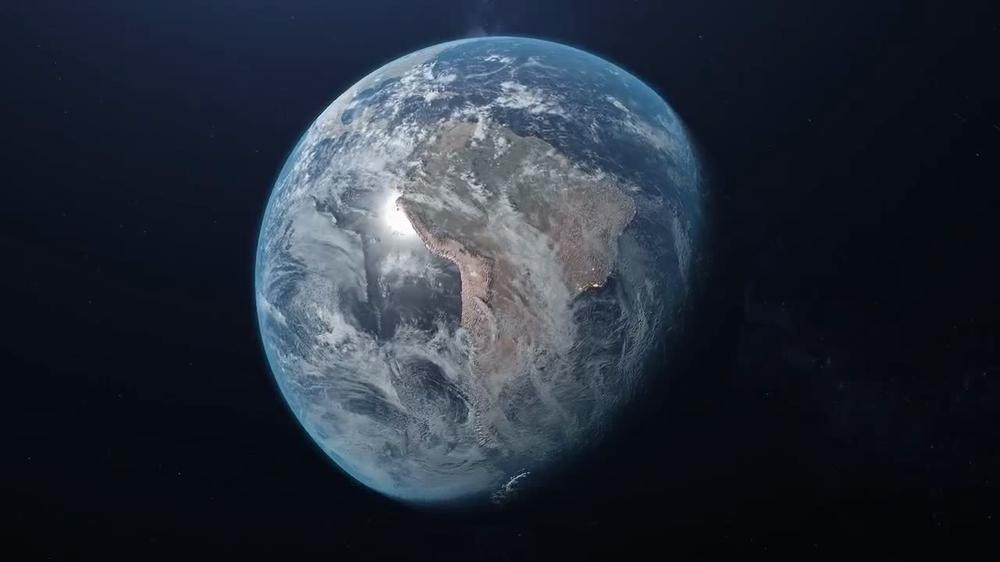
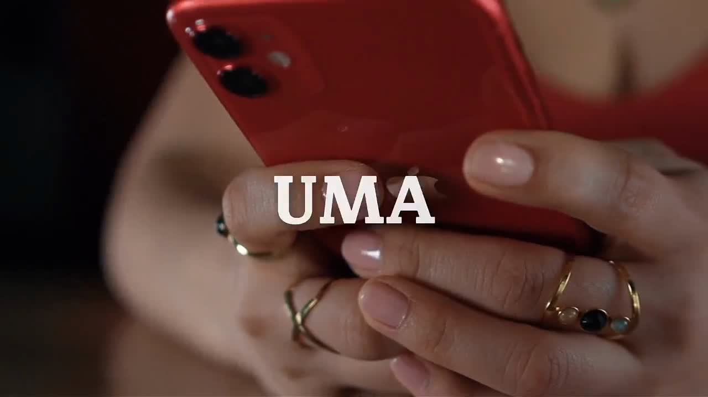
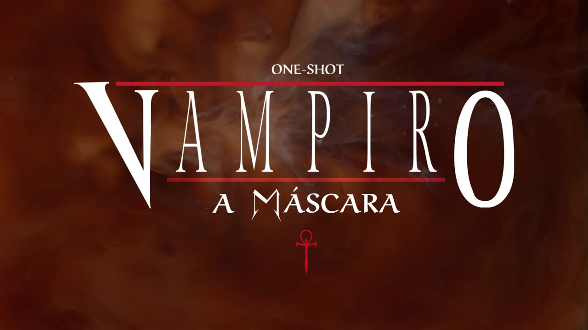
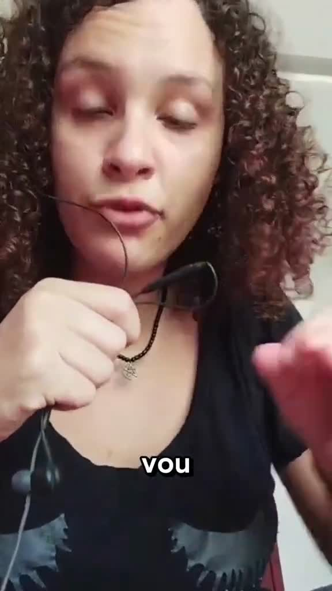
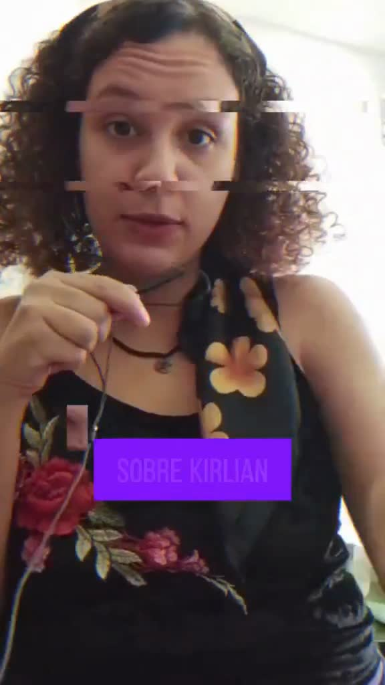
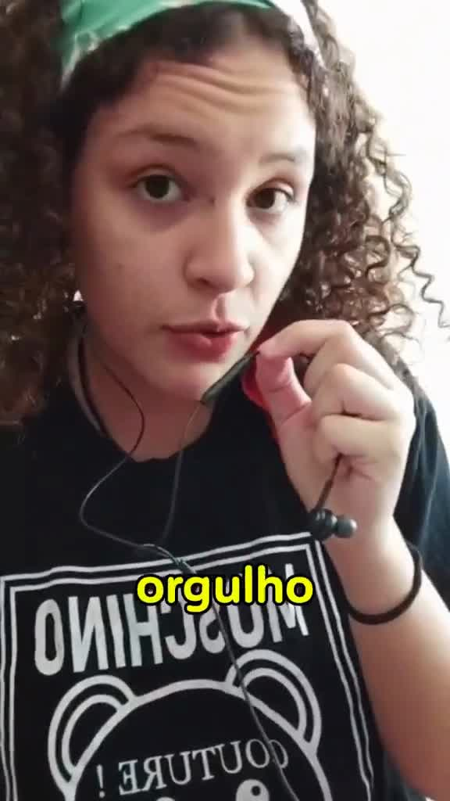

Se a Terra parasse por 1 segundo
Animações 3D da Terra, banco de imagens e títulos animados que entram junto com cada fato.
Sou editor de vídeo para YouTube, TikTok e Reels. Corto o tempo morto, coloco legendas que acompanham cada palavra e encaixo imagens no momento exato da fala, para o público assistir até o fim.
Os 6 vídeos deste portfólio, lado a lado na timeline. Duração total: 23:17.
Passe o mouse pela timeline e clique em um trecho para ver o vídeo.
Narração coberta cena a cena, sem tela parada. Clique na imagem para ver uma prévia de 30 segundos.

Animações 3D da Terra, banco de imagens e títulos animados que entram junto com cada fato.

Banco de imagens montado para cada ideia da narração ganhar a sua própria cena.
Títulos que apresentam o conteúdo antes da primeira fala.

Cartelas e título animados sobre fumaça apresentam a mesa, o mestre e o nome da aventura.
Publicados no perfil @sr_fajuto no TikTok. Clique na imagem para ver uma prévia de 30 segundos.

Legenda palavra por palavra, fotos no momento exato da fala e cortes secos.

Legendas em caixa colorida, vinheta com glitch e memes no ritmo da piada.

Capas e cartelas com o nome das autoras entram enquanto ela fala.
Você manda o material bruto, eu devolvo o vídeo pronto para postar.
Me conte o tipo de conteúdo, a frequência de postagem e o prazo. Respondo com uma proposta em até um dia.